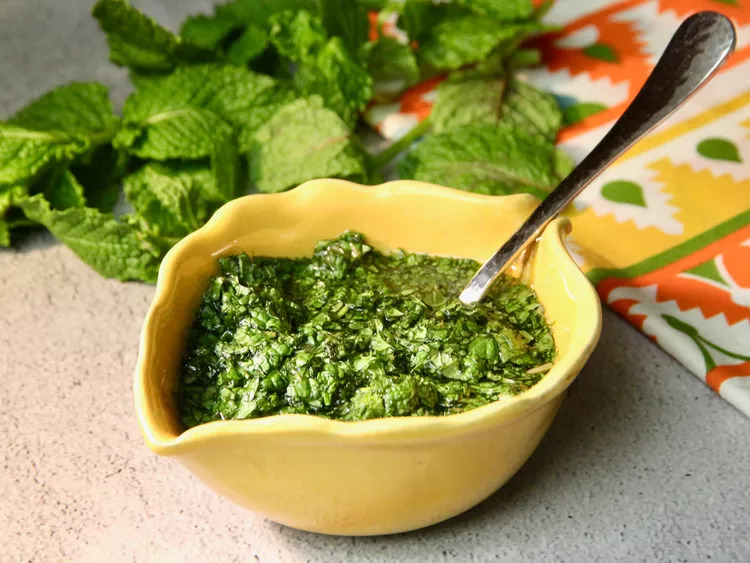

Mint Sauce

Description
Mint sauce is traditionally served with lamb,
but it’s also delicious on other meats such as chicken, pork, turkey, or duck. You can even stir mint sauce into some fresh peas—delicious!
Ingredients
- 1 1/2 tablespoons white sugar
- 2 tablespoons boiling water
- 2 tablespoons boiling water
- 1 1/2 tablespoons white wine vinegar
- 1 pinch salt
Steps
- Place sugar in a bowl, add boiling water, and stir until sugar has dissolved.
- Add chopped mint, vinegar, and salt to the bowl, and stir until well combined. Set aside for 45 minutes to allow the flavors to develop.
Index